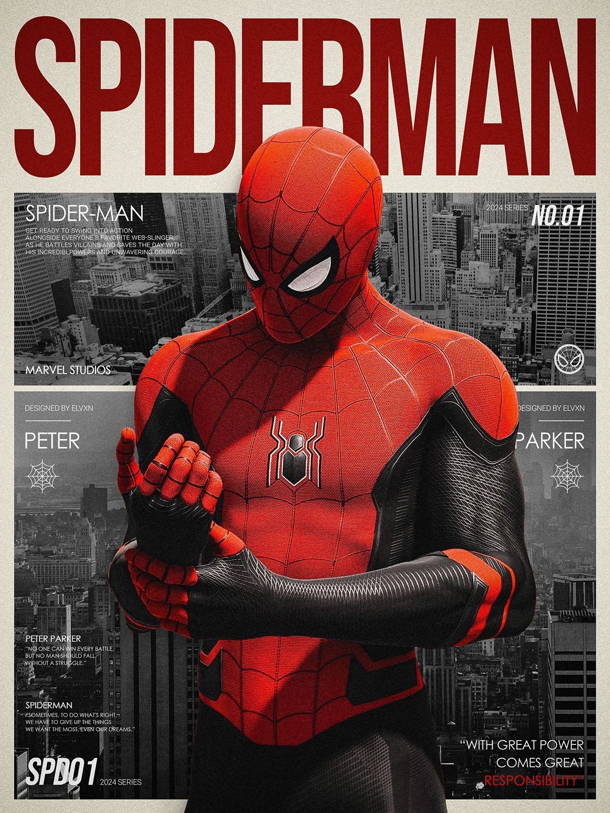
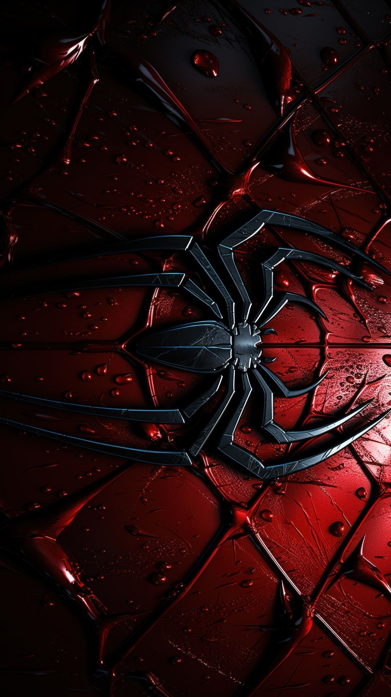
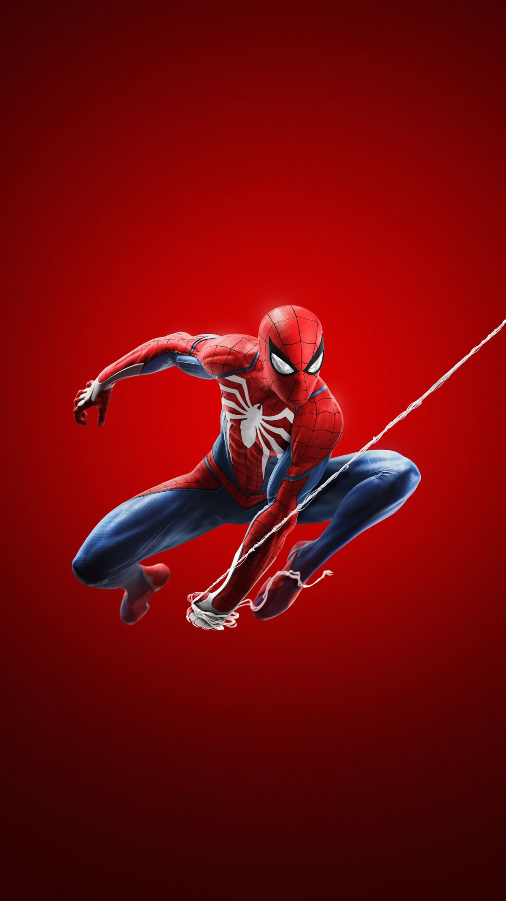

Spider-Man is a superhero in American comic books published by Marvel Comics.Created by writer-editor Stan Lee and artist Steve Ditko, he first appeared in the anthology comic book Amazing Fantasy #15 (August 1962) in the Silver Age of Comic Books. Widely regarded as one of the most popular and commercially success ful superheroes, he has been featured in comic books, television shows, films, video games, novels, and plays.

Spider-Man is the secret identity of Peter Benjamin Parker, who was raised by his Aunt May and Uncle Ben in Queens, New York City, after the death of his parents. Lee, Ditko, and later writers had the character deal with the struggles of adolescence and young adulthood. Readers identified with his self-doubt and loneliness. Unlike previous teen heroes, Spider-Man was not a sidekick nor did he have a mentor. He would be given many supporting characters. These include his Daily Bugle boss, J. Jonah Jameson; friends Harry Osborn and Flash Thompson; romantic interests Gwen Stacy, Mary Jane Watson, and the Black Cat; and enemies Doctor Octopus, the Green Goblin, and Venom. In his origin story, Peter gets his superhuman spider-powers and abilities after he was bitten by a radioactive spider. These powers include superhuman strength, speed, agility, reflexes and durability; clinging to surfaces and ceilings; and detecting danger with his precognitive "spider-sense". He sews a spider-web patterned spandex costume that fully covers his body and builds wrist-mounted "web-shooter" devices that shoot artificial spider-webs of his own design, which he uses for both fighting and "web swinging" across the city. Peter initially used his powers for personal gain, but after his Uncle Ben was killed by a burglar that he could have stopped but did not, he learned that "with great power comes great responsibility", and began to use his powers to fight crime as Spider-Man.

Marvel has featured Spider-Man in several comic book series, the first and longest-lasting of which is The Amazing Spider-Man. Since his introduction, the main-continuity version of Peter has gone from a high school student to attending college to currently being somewhere in his late 20s. Peter has been a member of numerous superhero teams, most notably the Avengers and Fantastic Four. Doctor Octopus also took on the identity for a story arc spanning 2012–2014 following the "Dying Wish" storyline, where Peter appears to die after Doctor Octopus orchestrates a body swap with him and becomes the Superior Spider-Man. Marvel has also published comic books featuring alternate versions of Spider-Man, including Spider-Man 2099, which features the adventures of Miguel O'Hara, the Spider-Man of the future; Ultimate Spider-Man, which features the adventures of a teenage Peter Parker in the alternate universe; and Ultimate Comics: Spider-Man, which depicts a teenager named Miles Morales who takes up the mantle of Spider-Man after Ultimate Peter Parker's apparent death. Miles later became a superhero in his own right and was brought into mainstream continuity during the Secret Wars event, where he sometimes works alongside the mainline version of Peter.
Marvel has featured Spider-Man in several comic book series, the first and longest-lasting of which is The Amazing Spider-Man. Since his introduction, the main-continuity version of Peter has gone from a high school student to attending college to currently being somewhere in his late 20s. Peter has been a member of numerous superhero teams, most notably the Avengers and Fantastic Four . Doctor Octopus also took on the identity for a story arc spanning 2012–2014 following the "Dying Wish" storyline, where Peter appears to die after Doctor Octopus orchestrates a body swap with him and becomes the Superior Spider-Man. Marvel has also published comic books featuring alternate versions of Spider-Man, including Spider-Man 2099, which features the adventures of Miguel O'Hara, the Spider-Man of the future; Ultimate Spider-Man, which features the adventures of a teenage Peter Parker in the alternate universe; and Ultimate Comics: Spider-Man, which depicts a teenager named Miles Morales who takes up the mantle of Spider-Man after Ultimate Peter Parker's apparent death. Miles later became a superhero in his own right and was brought into mainstream continuity during the Secret Wars event, where he sometimes works alongside the mainline version of Peter
3
there are three type of spiderman, They are